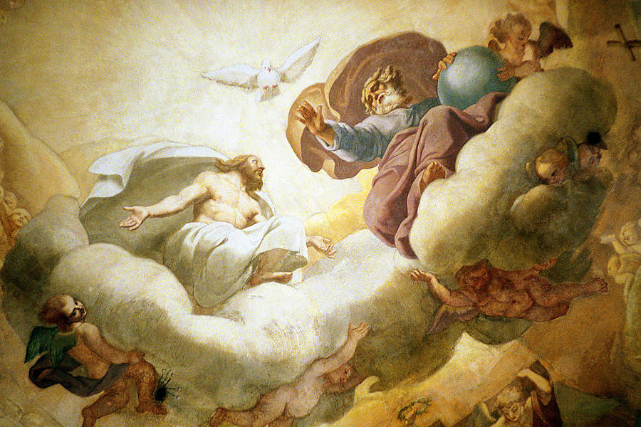
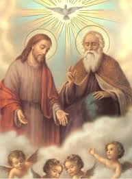
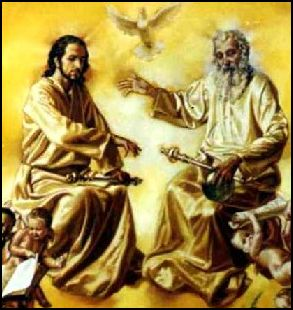
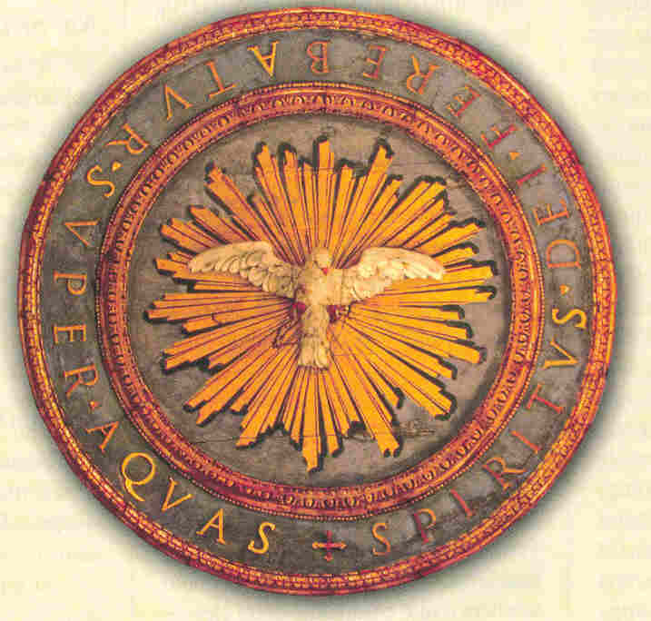
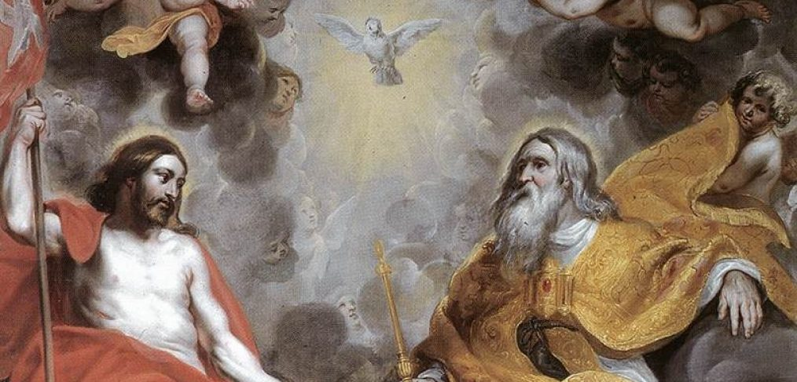

“CARIDADE DOM MAIOR”
A PERFEIÇÃO DIVINA REDUZIDA À SIMPLICIDADE DA ESSÊNCIA

Santo Agostinho manifesta que tudo que ele escreveu, sobre este assunto, e inclusive outras coisas mais que a linguagem humana com santidade poderia acrescentar, perfeitamente pode-se aplicar dignamente a DEUS e são adequadas a toda TRINDADE, que é UM SÓ DEUS. Assim como, também pode ser referido em particular, a cada uma das TRÊS PESSOAS DIVINAS da mesma TRINDADE SANTA. Com este objetivo, o Santo se empenha em reduzir “essas muitas coisas” que podem ser escritas sobre a SANTÍSSIMA TRINDADE, lembrando: “A vida que se atribui a DEUS, nada mais é que SUA Natureza ou Essência. Assim, DEUS vive pela vida que é ELE Mesmo. Essa vida que é própria de DEUS percebe e entende todas as coisas, e percebe pela Mente e não pelo Corpo, porque é Espírito: “DEUS é Espírito e aqueles que O adoram devem adorá-LO em Espírito e Verdade.” (Jo 4,24) “Em DEUS há uma só realidade, o sentir e o entender, ELE é imutável. NELE não existirá nenhum fim, como não houve princípio, pois é imortal. É também eterno, porque não tem princípio e nem fim; consequentemente é incorruptível. Assim, quando se afirma que ELE é vivente, inteligente, ou sábio, na verdade ELE nada recebeu, porque ELE é a própria Sabedoria; SUA Vida é a própria Virtude ou Poder, a mesma Formosura, que O faz Poderoso e Belo; a SUA Justiça é Bondade, e a Bondade é a Bem-Aventurança.”
Na continuidade, o Santo reduz uma quantidade incontável de perfeições Divinas em algumas poucas palavras, afirmando: “Pois, se a Sabedoria e o Poder, a Vida e a Sabedoria podem ser uma e mesma coisa na Essência de DEUS, por que não podem também ser uma e mesma coisa na Essência de DEUS, a Eternidade e a Sabedoria, ou a Felicidade e a Sabedoria?” E esta realidade refere-se a cada PESSOA DIVINA isoladamente, assim como, ao DEUS UNO E TRINO.
A DIFÍCIL DESCOBERTA DA TRINDADE DIVINA NAS COISAS VISÍVEIS
Abstraindo-nos do corpo humano e pensando apenas na alma, a "mente é também uma parte da alma". Ela não é a alma, mas a mente é o que há de mais nobre na alma. Em consequência, cada pessoa é denominada imagem de DEUS, não devido a toda a sua natureza humana, mas “apenas quanto a sua mente”. E sendo a “mente humana” a imagem de DEUS, é também a imagem da TRINDADE. Entretanto existe outra grande diferença. Acabamos de nos referir à mente das pessoas, mas há que se considerar também na mente humana, o “conhecimento” e o seu “amor”, ou seja: “à memória, a inteligência e a vontade humana”. Pois nada recordamos da mente, senão pela memória; nada compreendemos senão pela inteligência. Entretanto, no tocante a TRINDADE é completamente diferente, porque o DEUS TRINO é perfeito e completo, é o próprio Amor, é a própria Sabedoria, a Inteligência e a própria Justiça, assim como todas as Virtudes, Dons e Qualidades Imagináveis, que na TRINDADE estão unidas e presentes, constituindo a Eterna Vida Divina.
O ESPÍRITO SANTO E A CARIDADE

Por outro lado, se alguma das TRÊS PESSOAS que são absolutamente iguais em tudo, deve receber a denominação de CARIDADE (AMOR), quem tem mais propriedade é o ESPÍRITO SANTO. Ressalve-se, todavia, que as TRÊS PESSOAS DIVINAS têm a Mesma Substância e que a Caridade faz parte da Substância Divina.
E na verdade, nada há mais excelente do que este dom de DEUS a "CARIDADE". Ele é o “principal beneficio” que distingue os filhos do Reino eterno dos filhos da Perdição eterna. Muitos outros “dons” são também concedidos por meio do ESPÍRITO SANTO, primordialmente através dos Sacramentos, os quais, porém, nada aproveitam sem a “CARIDADE” (sem o AMOR).
NECESSIDADE DA FÉ
Santo Agostinho ensina que, para as pessoas poderem alcançar a Virtude de ver no espelho a sua própria vida, e sentir a presença da imagem DIVINA, é necessário organizar a sua existência e purificar o seu coração, através de uma fé sincera, sem o ranço de dúvidas ou devaneios. O mundo em nosso tempo se preocupa muito mais com a exibição, com o amor físico e a evidência pessoal. São procedimentos que roubam a preciosa atenção, assim como a concentração espiritual, e escancaram a disposição das pessoas ao pecado.
Aqueles que pertencem ao CORDEIRO, mesmo sendo mais tardos de inteligência, ao se libertarem do corpo, no fim desta vida, não estarão submetidos às potestades invejosas (o maligno) que buscam mantê-los cativos. O CORDEIRO imolado por todos, sem qualquer débito de pecado, venceu tais potestades não pela força de SEU Poder, mas pela Justiça de SEU DIVINO SANGUE.
E assim, na profundeza do imenso MISTÉRIO DIVINO, além de todos os benefícios, trabalhos e atividades no cotidiano da vida, a humanidade deveria de joelhos procurar contemplar este adorável Segredo. É necessário enxergar aquilo que a grandeza infinita do Amor de DEUS, a TRINDADE SANTA, proporciona a todos nós e anseia em ver em nosso coração, o fogo da fé humana crescer vigorosamente, lançando prodigiosamente suas incandescentes labaredas que alcançam a eternidade.
A PROCURA DE DEUS – O VERDADEIRO AMOR
Por isso mesmo Santo Agostinho
pergunta: “Se DEUS é Amor,
porque caminhar e correr às alturas dos Céus ou às profundezas da Terra à procura
“DAQUELE” que está junto 
Isso porque, quem realmente ama a DEUS, sabe como deve encontrá-LO e consequentemente, pratica os SEUS preceitos. E quanto mais O amar, melhor e mais bonito será o seu desempenho pessoal, mesmo que procure ocultar as suas manifestações piedosas, pela realidade do honesto e sincero amor que dedica a DEUS e também ao próximo. Pois esta verdade o SENHOR sempre revelou, conforme São Paulo escreveu na sua epístola aos Gálatas: “Pois toda lei está contida numa só palavra: Amarás a teu próximo como a ti mesmo”. (Gl 5,14)
E a seguir Santo Agostinho pergunta: “O que é o Amor ou a Caridade, tão louvada e exaltada pela Sagrada Escritura, senão o Amor do Bem?”
A FÉ PREPARA O AMOR
O "BEM SUPREMO e ETERNO" não se encontra longe de cada um de nós, pois como escreveu São Lucas nos Atos dos Apóstolos: “É NELE que temos a vida, o movimento e o nosso próprio ser”. (At 17, 28)
Mas é preciso permanecer junto DELE, para gozarmos de SUA presença, já que por ELE existimos e, sem SUA presença, não podemos existir.
Todavia, como caminhamos pela fé, não pela visão (ainda não vemos DEUS), como disse o Apóstolo São Paulo: “Face a Face”. (1 Cor 13,12) Se não amarmos agora o nosso DEUS, nunca O veremos. Então o “Amor” se faz necessário e presente na vida da humanidade, porque ele educa, civiliza e primordialmente purifica o coração, conforme disse o Apóstolo São Mateus: “Bem-aventurados os puros de coração, porque verão a DEUS!” (Mt 5,8)
Significa dizer: Temos de amar a DEUS estimulado por uma fé clara, concreta e permanente. Então, é muito importante para todas as pessoas: “amar e servir a DEUS”.
Este procedimento será eficaz e fértil, para enraizar aquelas três Virtudes que os Livros Sagrados evidenciam para a edificação da alma; refiro-me as três Virtudes Teologais: “a fé, a esperança e a caridade” (1 Cor 13, 13). Sem a existência delas, não conseguiremos purificar o coração para torná-lo apto a contemplar o SENHOR DEUS.
A COMPREENSÃO DESTES MISTÉRIOS NA VISÃO BEATÍFICA
Assim, livres do poder diabólico, as almas serão recebidas pelos Santos Anjos, libertadas de todos os males pelo Mediador Supremo entre DEUS e a humanidade – NOSSO SENHOR JESUS CRISTO. Pois pelo testemunho unânime das Divinas Escrituras do Antigo e do Novo Testamento, que preanunciaram e anunciaram a CRISTO, não há sob o Céu outro nome dado a humanidade pelo qual devemos ser salvos, disse São Lucas nos Atos dos Apóstolos: “Pois não há sob o Céu outro nome dado aos homens pelo qual devemos ser salvos”. (At 4,12)
Purificados de todo contágio de corrupção, serão elas (as almas fiéis) colocadas em lugares aprazíveis até receberem seus corpos, que serão incorruptíveis, os quais também serão o seu ornamento e não mais o seu peso. Pois aprouve ao CRIADOR Supremo que o espírito das pessoas, sujeito piedosamente a DEUS tenha na felicidade eterna um corpo obediente, e que tal felicidade perdure para sempre.
Por outro lado, lá na eternidade, não haverá mais pesquisas e estudos, porque veremos a verdade, sem qualquer esforço e gozaremos da realidade com toda clareza e absoluta certeza. Nada investigaremos pelo raciocínio, porque veremos pela contemplação que o ESPÍRITO SANTO não é o FILHO, embora proceda do PAI. Também desaparecerão as nossas dúvidas se o FILHO teria nascido do PAI antes da existência do ESPÍRITO SANTO, e em seguida, no mesmo momento, o ESPÍRITO SANTO procedeu do PAI e do FILHO. Pois a ESCRITURA SAGRADA denomina o ESPÍRITO SANTO de ESPÍRITO DO PAI e do FILHO. Com efeito, ELE é AQUELE do qual fala o Apóstolo São Paulo: “E porque são (somos) filhos, enviou DEUS em nossos corações o ESPÍRITO do SEU FILHO, que clama Abba, PAI!” (Gl 4,6) E é DELE que fala o próprio SENHOR: “... porque não sereis vós que estareis falando naquela hora, mas o ESPÍRITO de vosso PAI é que falará em vós.” (Mt 10,20) E com muitos outros testemunhos da Palavra de DEUS se comprova que o ESPÍRITO SANTO é o ESPÍRITO do PAI e do FILHO, e que na TRINDADE tem o nome de ESPÍRITO SANTO, sobre o qual diz o próprio FILHO: “... que EU vos enviarei de junto do PAI.” (Jo 15,26); e em outra parte: “Que o PAI enviará em MEU NOME.” (Jo 14,26)
A procedência de ambos é ainda afirmada pelo próprio FILHO que diz: “... o ESPÍRITO que procede (que vem) do PAI”. (Jo 15,26) Depois da SUA Ressurreição, JESUS aparecendo aos SEUS Discípulos, soprou sobre eles e disse: “Recebei o ESPÍRITO SANTO”. (Jo 20,22) Mostrando que o DIVINO PARÁCLITO também procedia DELE (de JESUS). ELE é aquela força que do SENHOR (de JESUS) saía como se lê no Evangelho, e a todos curava.
Na continuidade, Santo Agostinho
analisa e considera a dupla doação do ESPÍRITO SANTO feita por JESUS, primeiro
depois da SUA Ressurreição, quando apareceu 
E confirmando as SUAS Divinas Palavras, JESUS apareceu aos Apóstolos reunidos na Galiléia e lhes definiu a Missão Universal da Igreja: “Toda a autoridade sobre o Céu e sobre a Terra ME foi entregue. Ide, portanto, e fazei que todas as nações se tornem discípulos, batizando-as em nome do PAI, do FILHO e do ESPÍRITO SANTO, e ensinando-as a observar tudo quanto vos ordenei. E eis que EU estou convosco todos os dias até a consumação dos séculos!” (Mt 28, 18-20)
Então deve permanecer claro em nosso conhecimento, que o FILHO nasceu do PAI, e que o ESPÍRITO SANTO procede principalmente do PAI, pelo dom que o PAI fez ao FILHO, sem qualquer intervalo de tempo; e conjuntamente, ELE o ESPÍRITO, procede de ambos. E como o PAI ETERNO e o FILHO são “vida”, o ESPÍRITO SANTO também é “vida”. Assim como o PAI tem a “vida” em SI Mesmo e concedeu ao FILHO ter a “vida” em SI Mesmo, assim também concedeu ao ESPÍRITO SANTO que SUA “vida” procedesse, como do PAI procede.
E complementando a sua longa argumentação, com o objetivo de esclarecer uma realidade que acontece causada somente pelo procedimento humilde e carinhoso de JESUS em relação ao SEU PAI ETERNO, Santo Agostinho se firma na lógica da seguinte explicação: Se o ESPÍRITO SANTO procede do PAI e do FILHO, porque teria o FILHO afirmado: “O ESPÍRITO que vem (procede) do PAI” (Jo 15,26)? Na realidade, JESUS assim se manifestou porque era o hábito DELE, de exercitar uma maneira filial muito carinhosa sempre ao SE referir ao SEU Amado PAI, de QUEM ELE Mesmo nasceu. Pois no mesmo estilo amoroso e carinhoso, ELE disse: “Minha doutrina não é Minha, mas DAQUELE (do MEU PAI) que ME enviou”. (Jo 7,16). E então, agora que temos a plena convicção da igualdade absoluta das TRÊS PESSOAS DIVINAS, sem dúvida, estas duas citações nos fazem compreender que somente aconteceram, em virtude do procedimento simples e amoroso de JESUS, que sempre se preocupou em evidenciar a grandeza do SEU Amor e o especial carinho que manifestava pelo SEU PAI.
ORAÇÃO A SANTÍSSIMA TRINDADE
No final da sua magnífica obra “A TRINDADE”, Santo Agostinho nos deixou uma pungente e ardorosa oração ao DEUS DA VIDA. Procuraremos na sequência transferir para esta página o que for possível da preciosa ternura das suas palavras e do calor apaixonado do seu amor sincero e dedicado a SANTÍSSIMA TRINDADE, manifestado com a maior energia do seu coração e com a grandiosidade imensa do seu espírito culto e instruído, nas mais elevadas verdades cristãs.

Por ser uma oração longa, evidenciaremos apenas alguns parágrafos:
“SENHOR nosso DEUS, nós cremos em TI, PAI, FILHO e ESPÍRITO SANTO. Pois se não fosses a TRINDADE não teria recomendado:“Ide, Batizai a todos os povos, em nome do PAI, do FILHO e do ESPÍRITO SANTO”. (Mt 28,19) E também, nem nos ordenarias que fôssemos batizados em nome de alguém que não fosse o SENHOR DEUS. Nem a voz Divina diria:“Ouve, ó Israel, o SENHOR nosso DEUS é o Único DEUS”. (Dt 6,4) Se não fosses a TRINDADE e, ao mesmo tempo, o Único SENHOR DEUS”.
“Ó SENHOR meu DEUS, única esperança minha, ouve-me, a fim de que jamais me entregue ao cansaço e não mais queira TE buscar, mas ao contrário, “que sempre procure TUA Face, com todo o ardor” (Sl 104, 4). Fortalece aquele que TE busca, TU que permitiste ser encontrado, e cumulaste de esperança, de sempre mais TE encontrar”.
“Eis em TUA presença a minha força e a minha fraqueza: conserva a força e cura a fraqueza. Na TUA presença, minha ciência e minha ignorância: lá onde abriste para mim, permita que eu entre. Lá onde fechaste para mim, abra-me ao bater. Que de TI me lembre, que TE compreenda e que TE ame! Faze-me crescer nesses dons, até que me restaures totalmente”.
“Um sábio, falando de TI em seu livro, conhecido pelo nome de “Eclesiástico” diz: “Poderíamos nos estender sem esgotar o assunto; numa palavra: DEUS é tudo”. (Eclo 43, 27)
“Portanto, quando chegarmos à TUA presença, cessará o muito que dissemos sem entender, e TU permanecerás tudo em todos: “E, quando todas as coisas LHE tiverem sido submetidas, então o próprio FILHO se submeterá ÀQUELE que tudo LHE submeteu, para que DEUS seja tudo em todos”. (1 Cor 15, 28). E então, eternamente cantaremos um só cântico, louvando-TE em um só movimento em TI estreitamente unidos”.
“SENHOR, Único DEUS, DEUS TRINDADE, tudo o que disse de TI neste livro reconheçam-NO os TEUS; e se algo há de meu, perdoa-me e perdoem-me os TEUS. AMÉM.”
* AGOSTINHO, BISPO DE HIPONA.